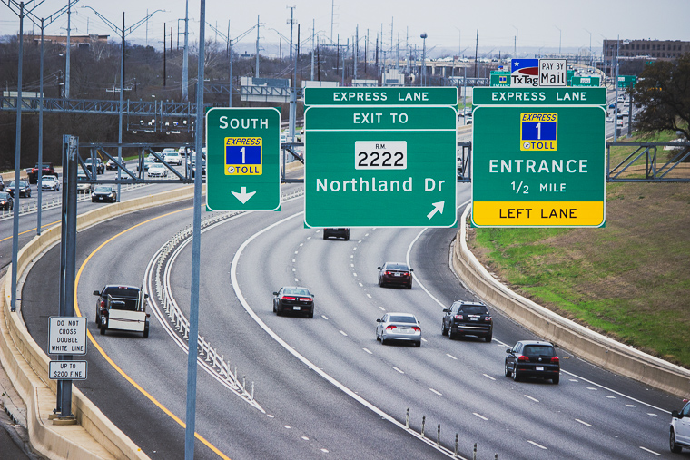

In this post, I explain how I simulated vehicle records for the Mopac Express Lane in Austin, Texas.

Motivation
I am currently working towards the release of my second R package, sift. This package is essentially an amalgam of various ideas I’ve had over the past few years. Since grouping these ideas into one package was very important to me, I needed a common theme to tie all of the functions together.
The dataset created in this post, express, serves as a realistic case study where one can effectively utilize the full capability of sift.
library(tidyverse)
library(lubridate)
library(jsonlite)
options(readr.default_locale = locale(tz = "US/Central"))
theme_set(theme_minimal())
Step 1: Reconnaissance
How frequent are various vehicle types on Mopac? Lots of F-150s? Toyota Camrys?
By no means does the intended application of the dataset require 100% accuracy. However, achieving something somewhat realistic was still important to me. After coming up dry on Google, I decided to walk out my front door and get the answer from the primary source.
Discreetly nestled in a grove overlooking Mopac, I aimed my camera at rush hour traffic and let the shutter snap for 2.5 minutes. After repeating this over the course of 1 week, I had collected over 600 frames.

These photos present a clear opportunity to apply an Image Recognition ML algorithm - but I‚Äôm saving that for a future post. üòâ
The resulting dataset is named rush_hour.
rush_hour <- read_csv("https://raw.githubusercontent.com/sccmckenzie/mopac/master/inst/extdata/rush_hour.csv")
# also available in mopac::rush_hour
rush_hour %>%
sample_n(5) %>%
knitr::kable()
| Thu |
2020-05-21 18:49:29 |
FALSE |
Black |
Sedan |
Toyota |
Camry |
| Wed |
2020-05-20 18:28:47 |
FALSE |
White |
Sedan |
BMW |
3-Series |
| Sat |
2020-05-23 15:06:26 |
FALSE |
White |
SUV |
Mercedes |
GLK-Class |
| Wed |
2020-05-20 18:29:23 |
FALSE |
Black |
SUV |
Ford |
Expedition |
| Wed |
2020-05-20 18:28:39 |
FALSE |
White |
Sedan |
Mercedes |
S-Class |
If you live in Texas, the below results shouldn’t come as a surprise.
rush_hour %>%
unite(make_model, make, model, sep = " ") %>%
drop_na(make_model) %>%
count(make_model) %>%
slice_max(order_by = n, n = 10) %>%
ggplot(aes(n, fct_reorder(make_model, n))) +
geom_col()

Although rush_hour satisfies the need for realistic vehicle make/model frequencies, it cannot serve as a basis for inferring express lane traffic density since observations were obtained from Mopac mainlanes.
To avoid further speculation, I made another trip to acquire express lane timestamps (collected during afternoon rush hour).
express_counts <- read_csv("https://raw.githubusercontent.com/sccmckenzie/mopac/master/inst/extdata/express_counts.csv")
glimpse(express_counts)
## Rows: 250
## Columns: 1
## $ time <dttm> 2021-03-04 17:57:16, 2021-03-04 17:57:18, 2021-03-04 17:57:22, 2~
Step 2: Defining Scope
Mopac contains an express lane stretching 11 miles between downtown Austin to Parmer Lane. There is an intermediate access point near RM 2222, boxed in pink below.
- Our mock dataset,
express, will feature vehicle descriptions + timestamps as if they are captured at the RM 2222 checkpoint,
- We’ll obtain peak traffic distribution by bootstrapping
express_counts, then adjusting based on City of Austin data.
- Vehicle make/model/color frequencies will be inferred from
rush_hour.
Step 3: Traffic Distribution
First, we extract timestamp spacing from express_counts.
set.seed(10)
t_delta <- express_counts %>%
mutate(t_delta = time_length(time - lag(time))) %>%
drop_na(t_delta) %>%
mutate(t_delta = t_delta + 2 * rbeta(n(), 2, 3)) %>%
# ^ we add some jitter into timestamps
# (observations were recorded with 1 sec resolution)
pull(t_delta)
t_delta %>%
qplot(binwidth = 0.25) # histogram

To simulate timestamps for express, we perform bootstrap sampling from the above distribution.
# set timeframe (5am - 8pm)
t1 <- 5
t2 <- 20
total_seconds <- (t2 - t1) * 3600
set.seed(20)
express <- tibble(direction = c("North", "South")) %>%
rowwise(direction) %>%
summarize(vehicle_spacing = sample(t_delta, size = total_seconds, replace = TRUE)) %>%
# ^ generate temporal vehicle spacing
transmute(time = make_datetime(2020, 5, 20, t1, tz = "US/Central") + cumsum(vehicle_spacing)) %>%
# ^ add temporal vehicle spacing together
filter(time < make_datetime(2020, 5, 20, t2, tz = "US/Central"))
# ^ cut off timestamps later than 8pm
express %>%
group_by(direction,
t15 = floor_date(time, unit = "15 minutes")) %>%
summarize(volume = n()) %>%
ggplot(aes(t15, volume)) +
geom_line(aes(color = direction))

While we have achieved some randomness, the consistent baseline around 150 is unrealistic. For example, around 6:00am, nobody is actually using the express lane.
Luckily, I managed to find a table containing real traffic counts from the City of Austin Open Data Portal. The low-level details here aren’t super exciting - I’ve only included the code for the sake of reproducibility. Essentially, I am projecting the real traffic density profile onto the above baseline distribution.
steck <- jsonlite::fromJSON('https://data.austintexas.gov/resource/sh59-i6y9.json?atd_device_id=6409&year=2020&month=5&day=20&heavy_vehicle=false') %>%
as_tibble() %>%
janitor::clean_names() %>%
filter(direction == "SOUTHBOUND") %>%
transmute(read_date = as_datetime(read_date, tz = "US/Central"),
direction,
movement,
volume = as.integer(volume)) %>%
with_groups(read_date,
summarize,
volume = sum(volume)) %>%
transmute(id = row_number(),
read_date,
volume = volume/max(volume))
# join Steck volume with express timestamps
set.seed(25)
express <- express %>%
mutate(id = findInterval(time, steck$read_date)) %>%
left_join(steck, by = "id") %>%
rowwise() %>%
mutate(keep = sample(c(FALSE, TRUE), prob = c(1 - volume, volume), size = 1)) %>%
# ^ treat volume as probability of keeping row in express
ungroup() %>%
filter(keep) %>%
select(direction, time) %>%
arrange_all()
express %>%
group_by(direction,
t15 = floor_date(time, unit = "15 minutes")) %>%
summarize(volume = n()) %>%
ggplot(aes(t15, volume)) +
geom_line(aes(color = direction))

Voila! The above distribution is much more believable: starting around 6am, traffic increases, levels out, and finally recedes around 6pm.
Step 4: Trip Modeling
We’ve arrived at the main course.
Though we could arbitrarily assign a unique vehicle for each row in express, this wouldn’t be realistic. Consider the below scenarios:
- Vehicle uses Express Lane once in one direction.
- Vehicle uses Express Lane once in both directions (e.g. commuting to & from work).
- Vehicle uses Express Lane thrice in any combination of directions (e.g. rideshare).
Before we jump in, let’s create a helper to extract hour of day as a decimal. This will improve readability of our downstream code.
hourday <- function(t) {
time_length(t - make_datetime(2020, 5, 20, tz = "US/Central"), unit = "hours")
}
# example
hourday(as_datetime("2020-05-20 12:30:00", tz = "US/Central"))
## [1] 12.5
For Scenario #1, each vehicle corresponds to one timestamp. We’ll obtain 5000 observations using a single unbiased sample.
set.seed(254)
scenario_1 <- express %>%
sample_n(size = 5000) %>%
mutate(v_id = row_number())
scenario_1 %>%
ggplot(aes(time)) +
geom_histogram(aes(fill = direction), binwidth = 900)

Note the above distribution contains roughly the same amount of north & south observations.
For Scenario 2, we’ll need to enforce actual equality between directions so that each north timestamp has a corresponding south timestamp.
Each vehicle will contain 2 timestamps:
- Timestamp A (driving to work)
- Timestamp B (driving home)
We sample A Timestamps weighted by \(\mathcal{N}(7\textrm{am}, 4\textrm{hr})\).
set.seed(400)
scenario_2A <- express %>%
anti_join(scenario_1) %>%
# ^ exclude observations already sampled into scenario_1
group_by(direction) %>%
# ^ need equal amounts of north & south samples
sample_n(size = 1000, weight = dnorm(hourday(time), mean = 7, sd = 2)) %>%
mutate(id = row_number()) %>%
ungroup()
We’ll assume most trips take ~10 hours (9 hour workday + 30 minute commute each way). This implies a B timestamp distribution of \(\mathcal{N}(5\textrm{pm}, 4\textrm{hr})\).
scenario_2B <- express %>%
anti_join(scenario_1) %>%
anti_join(scenario_2A) %>%
group_by(direction) %>%
sample_n(size = 1000, weight = dnorm(hourday(time), mean = 17, sd = 2)) %>%
mutate(id = row_number()) %>%
ungroup()
bind_rows(
mutate(scenario_2A, grp = "A"),
mutate(scenario_2B, grp = "B")
) %>%
ggplot(aes(time)) +
geom_histogram(aes(fill = grp))

Notice there is some overlap between the A & B distribution. This is intentional, as there will inevitably be some drivers that start their commute in the afternoon.
Currently, there are no unique vehicles tying observations together between scenario_2A & scenario_2B. Timestamp pairing is deceptively challenging if we wish to avoid inefficient for-loop structures. After some trial-and-error, I found the below procedure to work quite nicely:
- Randomly generate multiple sets - each containing 2500 pairs of observations (only pairing opposite directions together).
# Example of one 'set' for North -> South
# Within one set, each observation occurs once
# North[i] is 'paired' with South[i]
set.seed(451)
North <- sample(filter(scenario_2A, direction == "North")$time)
South <- sample(filter(scenario_2B, direction == "South")$time)
- Eliminate sets that contain impossible pairs (e.g. negative trip length).
- Examine trip length distributions and select set that appears normal.
The full implementation of this procedure is shown below.
set.seed(90)
# I arbitrarily set the number of repetitions to 100,
# which is ultimately more than enough to achieve desired result
scenario_2_sim <- bind_rows(
map_dfr(1:100, ~ {
tibble(i = ..1,
direction = "NS",
North = filter(scenario_2A, direction == "North")$time %>% sample(),
South = filter(scenario_2B, direction == "South")$time %>% sample())
}),
# now we flip the directions
map_dfr(1:100, ~ {
tibble(i = ..1,
direction = "SN",
South = filter(scenario_2A, direction == "South")$time %>% sample(),
North = filter(scenario_2B, direction == "North")$time %>% sample())
})
) %>%
mutate(l = if_else(direction == "NS",
time_length(South - North, unit = "hours"),
time_length(North - South, unit = "hours"))) %>%
with_groups(c(direction, i), filter, !any(l < 0.5))
scenario_2_sim %>%
ggplot(aes(l)) +
geom_density(aes(color = factor(i))) +
facet_wrap(~ direction, ncol = 1)

Most of these distributions appear normal. We’ll pick the one with the highest Shapiro-Wilk normality test statistic.
library(broom)
scenario_2 <- scenario_2_sim %>%
group_by(direction, i) %>%
summarize(vec = list(l)) %>%
rowwise() %>%
mutate(shapiro.test(vec) %>% tidy()) %>%
filter(p.value < 0.1) %>%
group_by(direction) %>%
slice_max(order_by = statistic) %>%
semi_join(scenario_2_sim, .) %>%
transmute(North, South, v_id = max(scenario_1$v_id) + row_number()) %>%
pivot_longer(North:South, names_to = "direction", values_to = "time")
For Scenario 3, we won’t impose any distributional or directional constraints on timestamp selection, simplifying the procedure considerably.
Since the average driver is unlikely to use the express lane more than twice / day, we will assign 100 vehicles to Scenario 3.
First, we shuffle the remaining rows in express and assign 3 timestamps per vehicle.
set.seed(100)
scenario_3 <- express %>%
anti_join(scenario_1) %>%
anti_join(scenario_2) %>%
sample_n(size = n()) %>%
mutate(v_id = (row_number() - 1) %% 3 == 0,
v_id = cumsum(v_id) + max(scenario_2$v_id)) %>%
arrange(v_id, time)
scenario_3 %>%
slice_head(n = 9) %>%
knitr::kable()
| North |
2020-05-20 11:19:17 |
7001 |
| South |
2020-05-20 15:07:51 |
7001 |
| South |
2020-05-20 17:54:40 |
7001 |
| South |
2020-05-20 08:47:28 |
7002 |
| South |
2020-05-20 13:21:30 |
7002 |
| South |
2020-05-20 17:14:47 |
7002 |
| South |
2020-05-20 13:08:55 |
7003 |
| South |
2020-05-20 13:24:35 |
7003 |
| South |
2020-05-20 17:55:40 |
7003 |
All that remains is to exclude vehicles with unrealistic timestamps. This time, we’ll use a lower threshold of 1 hour.
scenario_3 <- scenario_3 %>%
group_by(v_id) %>%
mutate(delta = time_length(time - lag(time), unit = "hours")) %>%
filter(!any(delta < 1, na.rm = TRUE)) %>%
ungroup() %>%
slice_head(n = 300) %>%
# ^ 3 rows / vehicle * 100 vehicles = 300 rows
select(direction, time, v_id)
There is also an Easter Egg I wish to plant: 2 vehicles that travel close together twice in one day. This is part of a fictional “bank robbery.”
We’ll sample a pair of timestamps each from noon and 5:00pm (assuming the robbery takes place within that timeframe).
set.seed(99)
robbery_A <- express %>%
anti_join(scenario_1) %>%
anti_join(scenario_2) %>%
anti_join(scenario_3) %>%
sample_n(size = 2, weight = dnorm(hourday(time), mean = 12, sd = 0.1)) %>%
mutate(v_id = max(scenario_2$v_id) + row_number())
robbery_B <- express %>%
anti_join(scenario_1) %>%
anti_join(scenario_2) %>%
anti_join(scenario_3) %>%
sample_n(size = 2, weight = dnorm(hourday(time), mean = 17, sd = 0.1)) %>%
mutate(v_id = max(scenario_2$v_id) + row_number())
robbery <- bind_rows(robbery_A, robbery_B)
Finally, we’ll assign the remaining timestamps to Scenario 1.
express <- express %>%
anti_join(scenario_1) %>%
anti_join(scenario_2) %>%
anti_join(scenario_3) %>%
anti_join(robbery) %>%
mutate(v_id = max(robbery$v_id) + row_number()) %>%
bind_rows(scenario_1, scenario_2, scenario_3, robbery) %>%
arrange(direction, time)
Step 5: Make/model assignment
We’ve successfully assigned a v_id to each timestamp - but v_id is only an integer. Now, we need to assign vehicle make/model/color to each v_id.
It’s finally time to leverage `rush_hour`` from Step 1.
For simplicity, we’ll assume the true frqeuency for each make/model does not depend upon day of the week. Hence, we treat each day as an independent sample. The below code calculates the weight of each make/model within each sample, then averages the weights between samples.
vehicle_probs <- rush_hour %>%
drop_na() %>%
count(day, make, model) %>%
group_by(day) %>%
mutate(wt = n / sum(n)) %>%
group_by(make, model) %>%
summarize(wt_mean = mean(wt), .groups = "drop") %>%
mutate(wt = wt_mean / sum(wt_mean), .keep = "unused")
For colors, we’ll sum across the entire dataset.
color_probs <- rush_hour %>%
drop_na() %>%
count(make, model, color) %>%
group_by(make, model) %>%
mutate(wt = n / sum(n)) %>%
ungroup()
We use sample_n to assign make/model/color in a vectorized fashion. Here, dplyr allows us to seamlessly change grouping as we progress through the operation.
set.seed(98)
express <- express %>%
distinct(v_id) %>%
# make/model
bind_cols(sample_n(vehicle_probs,
size = nrow(.),
weight = wt,
replace = TRUE)) %>%
select(!wt) %>%
# color
full_join(color_probs) %>%
group_by(v_id) %>%
sample_n(size = 1, weight = wt) %>%
select(!(n:wt)) %>%
inner_join(express, .) # join it all back with express
express %>%
sample_n(5) %>%
knitr::kable()
| North |
2020-05-20 14:32:48 |
4834 |
Porsche |
Panamera |
Black |
| North |
2020-05-20 05:40:34 |
5939 |
Infiniti |
G37 |
White |
| North |
2020-05-20 18:20:32 |
8654 |
Chevy |
Silverado |
Black |
| South |
2020-05-20 15:15:13 |
1557 |
Nissan |
350Z |
Silver |
| North |
2020-05-20 15:21:27 |
2718 |
Honda |
S-3000 |
Silver |
Step 6: Plate Assignment
Investigating license plate statistics (e.g. from where are the most frequent out-of-state plates) is certainly worth investigating - but for now, I’m choosing to generate plates that solely adhere to Texas formatting: 3 characters + 4 numbers. Again, the tidyverse saves us from expensive for-loop operations.
set.seed(97)
plate_letters <- crossing(L1 = LETTERS, L2 = LETTERS, L3 = LETTERS) %>%
mutate(st = str_c(L1, L2, L3, sep = "")) %>%
pull(st) %>%
sample(., n_distinct(express$v_id), replace = TRUE)
plate_numbers <- 0:9999
plate_numbers <- str_pad(plate_numbers, side = "left", pad = "0", width = 4) %>%
sample(., n_distinct(express$v_id), replace = TRUE)
plates <- str_c(plate_letters, plate_numbers, sep = "-")
At last, plate replaces the role of v_id.
express <- express %>%
distinct(v_id) %>%
mutate(plate = plates) %>%
inner_join(express, .) %>%
relocate(plate, .before = make) %>%
select(!v_id)
express %>%
sample_n(5) %>%
knitr::kable()
| North |
2020-05-20 14:44:10 |
ZKV-1030 |
Subaru |
BRZ |
Grey |
| South |
2020-05-20 10:49:33 |
FNA-7147 |
Chevy |
Camaro |
Red |
| South |
2020-05-20 11:37:16 |
SAB-6592 |
Hyundai |
Santa Fe |
Silver |
| South |
2020-05-20 14:59:38 |
RUY-4366 |
BMW |
5-Series |
Black |
| North |
2020-05-20 12:44:53 |
VLJ-3169 |
Hyundai |
Tucson |
Grey |